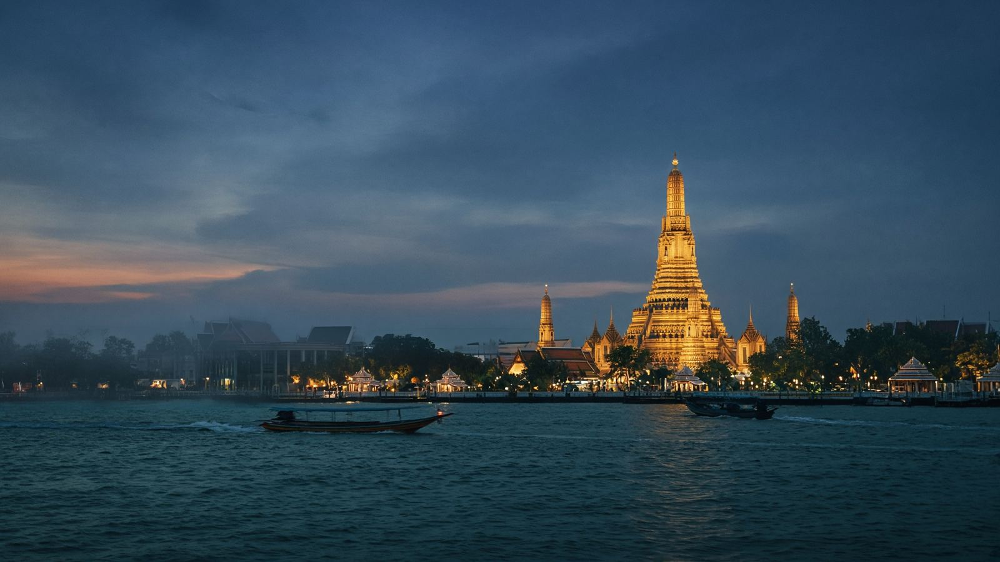
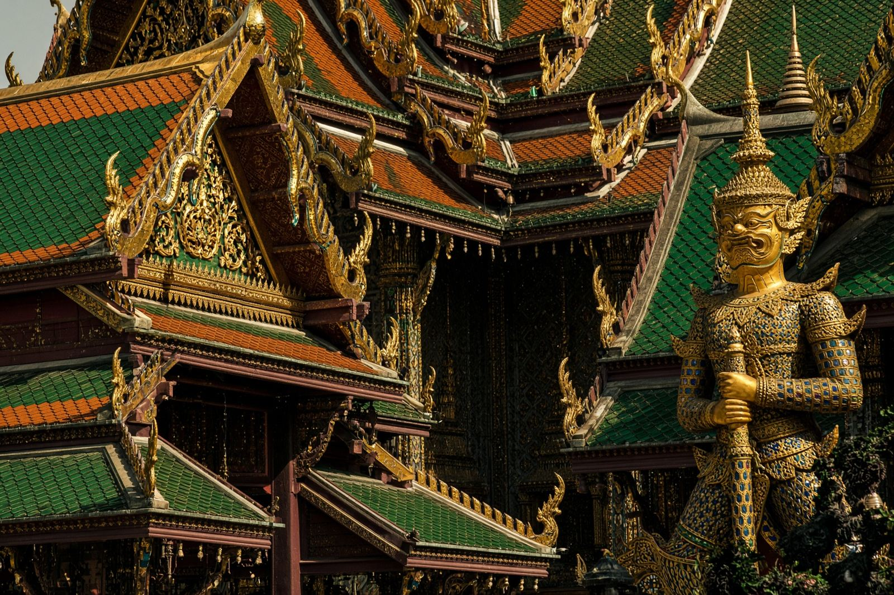
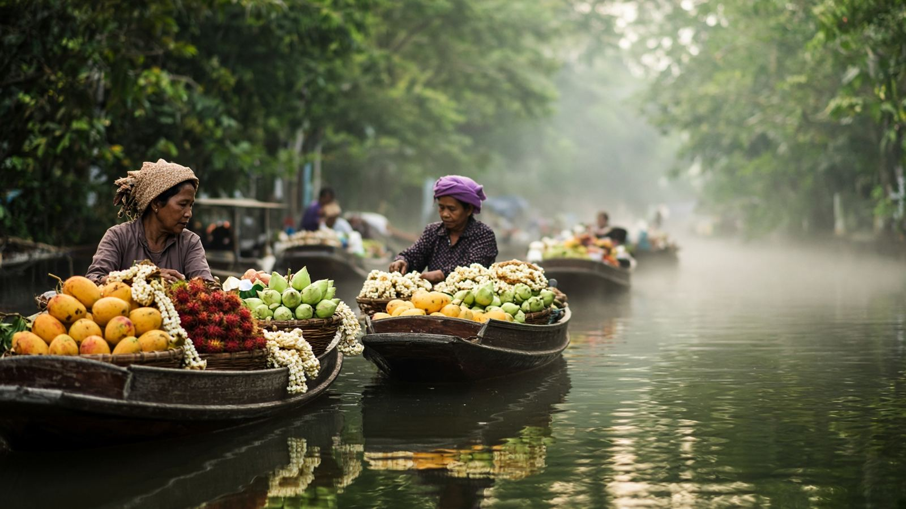

<!DOCTYPE html>
<html lang="hu">
<head>
<meta charset="utf-8"/>
<meta name="viewport" content="width=device-width, initial-scale=1"/>
<title>Yiam Travel — magyar idegenvezetés Thaiföldön</title>
<meta name="description" content="Magán magyar idegenvezetés Bangkokban és Thaiföldön. Templomok, vízipiac, északi körút, Angkor, szabott utak. Harminc év helyismeret."/>
<link rel="icon" href="favicon.svg" type="image/svg+xml"/>
<link rel="preconnect" href="https://fonts.googleapis.com"/>
<link rel="preconnect" href="https://fonts.gstatic.com" crossorigin/>
<link href="https://fonts.googleapis.com/css2?family=Fraunces:opsz,wght@9..144,460;9..144,560;9..144,640&family=Outfit:wght@340;420;520;600&display=swap" rel="stylesheet"/>
<style>:root {
  --ink: #101612;
  --ink-soft: #1b2620;
  --paper: #f3eee4;
  --paper-deep: #e7e0d2;
  --gold: #c6a15b;
  --gold-deep: #8d6b32;
  --saffron: #d4652f;
  --mist: #8a8478;
  --fog: #d5cec2;
  --line: #ddd4c6;
  --fg: #141a16;
  --display: "Fraunces", "Iowan Old Style", Georgia, serif;
  --sans: "Outfit", "Avenir Next", system-ui, sans-serif;
}
* { box-sizing: border-box; }
html { scroll-behavior: smooth; }
body {
  margin: 0;
  background: var(--paper);
  color: var(--fg);
  font-family: var(--sans);
  font-weight: 420;
  line-height: 1.55;
  -webkit-font-smoothing: antialiased;
}
button, a { font: inherit; }
button, [role="button"] { cursor: pointer; }
img { max-width: 100%; display: block; }
h1, h2, h3 { font-family: var(--display); font-weight: 520; letter-spacing: -0.02em; text-wrap: balance; margin: 0; }
p { text-wrap: pretty; }
a { color: inherit; text-decoration: none; }
::selection { background: var(--gold); color: var(--ink); }

.wrap { width: min(72rem, calc(100% - 2.5rem)); margin-inline: auto; }
.kicker { font-size: 0.75rem; letter-spacing: 0.18em; text-transform: uppercase; color: var(--gold-deep); }
.kicker.light { color: var(--gold); }
.display { font-family: var(--display); }

header.bar {
  position: fixed; inset: 0 0 auto 0; z-index: 40;
  color: var(--paper);
  transition: background .3s, border-color .3s;
}
header.bar.solid {
  background: color-mix(in oklab, var(--ink) 92%, transparent);
  border-bottom: 1px solid color-mix(in oklab, var(--fog) 15%, transparent);
  backdrop-filter: blur(12px);
}
.bar-row { height: 4rem; display: flex; align-items: center; justify-content: space-between; }
.word { font-family: var(--display); font-size: 1.45rem; letter-spacing: -0.02em; }
nav.desk { display: none; align-items: center; gap: 1.75rem; }
nav.desk a { font-size: 0.92rem; color: var(--fog); }
nav.desk a:hover { color: var(--gold); }
.btn {
  display: inline-flex; align-items: center; justify-content: center;
  border-radius: 999px; padding: 0.75rem 1.25rem; border: 0;
  background: var(--saffron); color: var(--ink); font-weight: 520;
  transition: background .2s, color .2s, border-color .2s, transform .2s;
}
.btn:hover { background: var(--gold); }
.btn.ghost { background: transparent; color: var(--paper); border: 1px solid color-mix(in oklab, var(--fog) 40%, transparent); }
.btn.ghost:hover { border-color: var(--gold); color: var(--gold); background: transparent; }
.btn.ink { background: var(--ink); color: var(--paper); }
.btn.ink:hover { background: var(--ink-soft); }
.menu-btn {
  width: 2.75rem; height: 2.75rem; border-radius: 999px;
  border: 1px solid color-mix(in oklab, var(--fog) 30%, transparent);
  background: transparent; color: inherit;
}
.mobile {
  display: none; border-top: 1px solid color-mix(in oklab, var(--fog) 15%, transparent);
  background: var(--ink); padding: 1rem 1.25rem 1.25rem;
}
.mobile a { display: block; padding: 0.75rem 0.25rem; font-size: 1.15rem; }
header.bar.open .mobile { display: block; }

.hero { position: relative; min-height: 100svh; overflow: hidden; background: var(--ink); color: var(--paper); }
.hero img.bg, .cover img.bg { position: absolute; inset: 0; width: 100%; height: 100%; object-fit: cover; }
.hero img.bg { animation: ken 32s ease-out both; }
.shade {
  position: absolute; inset: 0;
  background: linear-gradient(180deg, color-mix(in oklab, var(--ink) 42%, transparent), color-mix(in oklab, var(--ink) 18%, transparent) 34%, color-mix(in oklab, var(--ink) 78%, transparent));
}
.hero-copy, .cover-copy { position: relative; min-height: inherit; display: flex; flex-direction: column; justify-content: flex-end; padding: 7rem 0 4rem; }
.hero h1 { font-size: clamp(2.8rem, 7vw, 4.6rem); line-height: 1.02; max-width: 16ch; }
.lede { max-width: 38rem; color: var(--fog); font-size: 1.125rem; }
.row { display: flex; flex-wrap: wrap; gap: 0.75rem; margin-top: 2rem; }

.ticker { overflow: hidden; background: var(--ink-soft); color: var(--fog); border-block: 1px solid color-mix(in oklab, var(--fog) 15%, transparent); padding: 1rem 0; }
.ticker-track { display: flex; gap: 2rem; width: max-content; animation: ticker 42s linear infinite; }
.ticker span { letter-spacing: 0.2em; text-transform: uppercase; font-size: 0.85rem; }
.ticker i { color: var(--gold); font-style: normal; margin-left: 2rem; }

.section { padding: 5rem 0; }
.section h2 { font-size: clamp(2.1rem, 4vw, 3.1rem); }
.split { display: grid; gap: 2.5rem; }
.card-grid { display: grid; gap: 1.5rem; margin-top: 2.5rem; }
.card {
  display: flex; flex-direction: column; overflow: hidden; border-radius: 1.25rem;
  background: var(--paper); color: var(--fg);
  box-shadow: 0 1px 0 rgba(16,22,18,.06);
  outline: 1px solid var(--line);
  transition: transform .3s, outline-color .3s;
}
.card:hover { transform: translateY(-4px); outline-color: var(--gold); }
.card .shot { position: relative; aspect-ratio: 4/3; overflow: hidden; }
.card img { width: 100%; height: 100%; object-fit: cover; transition: transform .5s; }
.card:hover img { transform: scale(1.05); }
.pill {
  position: absolute; left: 0.75rem; top: 0.75rem;
  background: color-mix(in oklab, var(--ink) 80%, transparent);
  color: var(--paper); border-radius: 999px; padding: 0.25rem 0.75rem;
  font-size: 0.72rem; letter-spacing: 0.14em; text-transform: uppercase;
  backdrop-filter: blur(6px);
}
.card .body { padding: 1.25rem; display: flex; flex-direction: column; flex: 1; }
.meta { display: flex; justify-content: space-between; margin-top: 1rem; font-size: 0.92rem; }
.mist { color: var(--mist); }
.gold { color: var(--gold-deep); }

.band { background: var(--paper-deep); }
.ink { background: var(--ink); color: var(--paper); }
.two { display: grid; gap: 2rem; }
.reasons { list-style: none; padding: 0; margin: 2rem 0 0; }
.reasons li { border-top: 1px solid var(--line); padding-top: 1.2rem; margin-top: 1.2rem; }
.reasons strong { display: block; font-family: var(--display); font-size: 1.5rem; font-weight: 520; }
.story {
  overflow: hidden; border-radius: 1.25rem; background: var(--ink-soft);
  outline: 1px solid color-mix(in oklab, var(--fog) 15%, transparent);
  transition: outline-color .3s;
}
.story:hover { outline-color: var(--gold); }
.story img { aspect-ratio: 16/9; width: 100%; object-fit: cover; transition: transform .5s; }
.story:hover img { transform: scale(1.04); }
.story div { padding: 1.5rem; }

footer.site { background: var(--ink); color: var(--paper); }
.foot { display: grid; gap: 2rem; padding: 3.5rem 0; }
.fine { border-top: 1px solid color-mix(in oklab, var(--fog) 15%, transparent); text-align: center; letter-spacing: 0.16em; text-transform: uppercase; font-size: 0.72rem; color: var(--mist); padding: 1.25rem; }
footer a:hover { color: var(--gold); }

.page { padding: 7rem 0 5rem; animation: rise .55s cubic-bezier(.22,1,.36,1) both; }
.filters { display: flex; flex-wrap: wrap; gap: 0.5rem; }
.chip { border: 0; border-radius: 999px; padding: 0.5rem 1rem; background: var(--paper-deep); color: var(--fg); }
.chip.on { background: var(--ink); color: var(--paper); }
.search {
  width: 100%; border-radius: 999px; border: 1px solid var(--line); background: var(--paper);
  padding: 0.75rem 1rem; outline: none;
}
.search:focus { box-shadow: 0 0 0 2px var(--gold); }
.toolbar { display: flex; flex-direction: column; gap: 1rem; margin-top: 2rem; }

.cover { position: relative; min-height: 68svh; background: var(--ink); color: var(--paper); }
.layout { display: grid; gap: 3rem; }
aside.box { background: var(--ink); color: var(--paper); border-radius: 1.25rem; padding: 1.5rem; }
aside.box li { border-bottom: 1px solid color-mix(in oklab, var(--fog) 15%, transparent); padding: 0.5rem 0; list-style: none; }
aside.box ul { margin: 1rem 0 0; padding: 0; }
.days { list-style: none; padding: 0; margin: 3rem 0 0; }
.days li { border-top: 1px solid var(--line); padding-top: 1.4rem; margin-top: 1.4rem; }

.journal a.item {
  display: grid; gap: 1rem; border-top: 1px solid var(--line); padding: 2rem 0; align-items: center;
}
.num { font-family: var(--display); font-size: 3rem; color: var(--gold-deep); margin: 0; }
.prose p { font-size: 1.125rem; line-height: 1.7; }
.round { border-radius: 1.25rem; width: 100%; object-fit: cover; }

.tips { display: grid; gap: 1px; background: var(--line); border-radius: 1.25rem; overflow: hidden; margin-top: 4rem; }
.tips article { background: var(--paper); padding: 1.6rem; }

form.sheet { background: var(--paper-deep); border-radius: 1.25rem; padding: 1.5rem; }
label.field { display: block; }
label.field span, .label { display: block; font-size: 0.9rem; color: var(--mist); margin-bottom: 0.25rem; }
input, select, textarea {
  width: 100%; border-radius: 1rem; border: 1px solid var(--line); background: var(--paper);
  padding: 0.75rem 1rem; font: inherit; color: inherit; outline: none;
}
input:focus, select:focus, textarea:focus { box-shadow: 0 0 0 2px var(--gold); }
.fields { display: grid; gap: 1rem; }
.saved { background: var(--paper-deep); border-radius: 1rem; padding: 0.75rem 1rem; font-size: 0.92rem; }
.thanks { background: var(--ink); color: var(--paper); border-radius: 1.25rem; padding: 2rem; }
.linkish { background: none; border: 0; color: var(--gold); padding: 0; margin-top: 1rem; }

@media (min-width: 768px) {
  nav.desk { display: flex; }
  .menu-btn { display: none; }
  .card-grid.three, .card-grid { grid-template-columns: 1fr 1fr; }
  .two, .split, .foot, .layout, .journal a.item { grid-template-columns: 0.9fr 1.1fr; }
  .foot { grid-template-columns: 1.4fr 0.8fr 0.8fr; }
  .journal a.item { grid-template-columns: 160px 1fr 220px; }
  .journal img { display: block; }
  .tips { grid-template-columns: 1fr 1fr; }
  .fields.two { grid-template-columns: 1fr 1fr; }
  .toolbar { flex-direction: row; align-items: center; justify-content: space-between; }
  .search { width: 18rem; }
  .span2 { grid-column: span 2; }
}
@media (min-width: 1100px) {
  .card-grid.three { grid-template-columns: 1fr 1fr 1fr; }
}
.journal img { display: none; border-radius: 1.25rem; aspect-ratio: 4/3; width: 100%; object-fit: cover; }
@media (min-width: 768px) { .journal img { display: block; } }
aside.stick { position: sticky; top: 6rem; }

@keyframes rise { from { opacity: 0; transform: translateY(10px); } to { opacity: 1; transform: none; } }
@keyframes ken { from { transform: scale(1.08); } to { transform: scale(1); } }
@keyframes ticker { from { transform: translateX(0); } to { transform: translateX(-50%); } }
@media (prefers-reduced-motion: reduce) {
  html { scroll-behavior: auto; }
  .hero img.bg, .ticker-track, .page { animation: none; }
}
</style>
</head>
<body>
<div id="app"></div>
<script id="site-data" type="application/json">{"brand":{"name":"Yiam Travel","line":"Magyar idegenvezetés Thaiföldön","phoneHu":"+36 30 861 1959","phoneTh":"+66 81 554 4878","email":"info@yiamtravel.com"},"categoryLabel":{"classic":"Classic","day":"Egynapos","circuit":"Körút","tailor":"Szabott","meditation":"Meditáció"},"places":["Bangkok","Ayutthaya","Damnoen Saduak","Amphawa","Kanchanaburi","Sukhothai","Chiang Rai","Chiang Mai","Khao Yai","Angkor","Yangon","Phuket"],"stories":[{"slug":"szaz-nap","title":"Száz nap a dzsungelben","kicker":"Indulás","minutes":"6 perc","image":"/photos/monastery.jpg","imageAlt":"Köd egy erdei kolostor hajnalán","excerpt":"Öt óra, még sötét. Egy frissen avatott szerzetes toporog a mikrobusz körül, a szatyrában egy váltás csuha és egy fogkefe.","body":["Reggel öt óra van, tök sötét. Egy várakozással teli fiatal szerzetes toporog a templomudvaron álló mikrobusz körül, és várja az indulást. Az ifjú szerzetes alig ötvenéves — szerzetesnek viszont fiatal, mert mindössze néhány hete avatták.","A sötétben nem látszik a karcsú termet, a nemes arc, a szokatlanul egyenes tekintet. A neve Pra Putaszavako, Pra Andrew, Monk Andrew, ahogy tetszik. A szatyrában minden cókmók: egy váltás csuha, személyes szúnyogháló, fogkefe, fogkrém, szappan, törölköző. Ennyi. A pakolás nem tartott sokáig.","A sofőr alvástól dagadt szemmel érkezik, nem köszön. Az alsóbb osztályokban a köszönés Thaiföldön nem szokás, de a papot illik köszönteni. Ez elmarad. Feltépi az ajtót, bevágja magát az ülésbe, és tépni kezdi a kormányt. Én ezalatt hátra mászom. A mikrobusz repülőstartot vesz.","Úgy veszi a kanyarokat, mint a megszállott. Messziről látja, hogy piros a lámpa, mégis gyorsít, és amikor már azt hiszem, hogy áthajtunk rajta, beletapos a fékbe. Égett gumiszag. Annyit nyögök ki: „Luk, csa jen jen.” Nyugi, fiam.","Útra keltem. Lassan hagyjuk el Bangkokot, és a gondolataimba merülök. Szerzetes jóakaróim szinte kivétel nélkül ezt a burmai határ menti testvérkolostort javasolták meditációra. Az idős főnököt mint a legjobb mestert, a vidéki kolostort a csöndje miatt. Nem kevés ravaszság kellett, hogy fiatal szerzetesként kiharcoljam: a mi kolostorunk főnöke maga is világhírű meditációs mester.","Bangkokban már megtanultam egy minimális technikát. Pontosan tudom, miről van szó. Azt még mindig nem tudom, mi a meditáció. Hát ezt fogom hamarosan megtudni.","Néha kinézek, hol járhatunk. Bangkok az a város, ahol minden utca kísértetiesen egyforma: a házak, a boltok, a reklámok, a kereszteződések, az emberek. Kivéve talán a királyi palota környékét. De ma arra nem megyünk."]},{"slug":"avatas","title":"Az avatás reggele","kicker":"Buat","minutes":"5 perc","image":"/photos/golden.jpg","imageAlt":"Arany fény egy hegyi szentélyen","excerpt":"Verőfényes, madárcsicsergős vasárnap. Szerzetessé avatásom napja. Hajnali négykor szólalt meg a hongkongi ébresztő.","body":["Verőfényes, madárcsicsergős vasárnap. Szerzetessé avatásom napja. Hajnali négykor szólalt meg a hongkongi gyártmányú, kacsatestű, gyerekdalt játszó ébresztőm. Minden akaraterőmre szükség volt, hogy felkeljek. Nem sokat aludtam.","A buat nem jelmezbál. Fehér ruha, a család — ha van a közelben —, a kolostor, a borotva, a fogadalom. Utána már nem a saját neveden szólítanak, és nem a saját tempódban eszel. Reggel koldulni mész, akkor is, ha előző életedben boltjaid voltak.","Ezen a reggelen még civil a fejem, és már tudom, hogy estére nem lesz. A város zaja ugyanaz, a madarak ugyanazok. Ami változik, az a szabály: mit szabad megérinteni, hova szabad nézni, mikor szabad beszélni. A többiről a kolostor majd gondoskodik.","Aki meditációs túrára jön velem, nem avatásra jön. Világi vendég marad. De hasznos tudni, milyen házba lép be, és hogy a narancssárga ruha nem kosztüm."]},{"slug":"kolostor","title":"A kolostor, belülről","kicker":"Udvar","minutes":"5 perc","image":"/photos/sukhothai.jpg","imageAlt":"Csendes udvar, víz és kő","excerpt":"Másfél kataszteri hold Bangkok kellős közepén. Ma vagyon. Akkor egyszerűen a hely, ahol hajnali négykor megkondul a csengő.","body":["A kolostor másfél kataszteri holdon terül el. Bangkokban ez ma komoly vagyon. A főútról hosszú, kacskaringós soi vezet be. Két főbejárat van, nem túl messze egymástól: az egyik rögtön a templomba visz, a másik az udvarra.","Hajnali négykor szólal meg a harang. Harangnak sok, inkább csengő: aritmikusan verik, bi-bing, ba, ba-ban-bang. Ha agyonütnének, se tudnám utána csinálni. A testvér, aki veri, évek óta ugyanazt a ritmust őrzi, és az egész ház erre ébred.","A kuti a szerzetes cellája. Kicsi, szúnyoghálós, egy szőnyeg, egy tál. A közös élet a templom körül történik: a koldulás, a tanulás, a sepregetés, a vita arról, ki melyik szabályt érti félre. A turista ebből a kaput látja. Én egy ideig a kapun belül aludtam.","Ezért tudom megmutatni a márványtemplomnál, meddig lehet besétálni, és hol kell megállni. A határ nem a kerítés. A határ a szokás."]},{"slug":"vipassana","title":"Vipasszaná, ha nincs mester a közelben","kicker":"Gyakorlat","minutes":"7 perc","image":"/photos/white.jpg","imageAlt":"Csendes reggel egy fehér szentélynél","excerpt":"Gyakorlati tanácsok azoknak, akik egyedül, mester nélkül ülnének le. Aki mesterrel tanul, az kizárólag a mesterét kövesse.","body":["Gyakorlati tanácsok azoknak, akik egyedül, mester nélkül akarnak meditálni. Aki mesterrel tanul, az kizárólag a mestere útmutatását kövesse. A kettőt keverni ostobaság.","A vipasszaná nem ellazulás és nem vizualizáció. Ülsz, és észreveszed, ami történik: a lélegzetet, a viszketést, a gondolatot, ami azt hiszi, hogy ő te vagy. Nem kell elűzni. Észrevenni kell, és nem menni utána.","Kezdetnek rövid ülés elég, minden nap ugyanakkor. A hát egyenes, a szem lefelé vagy csukva, a telefon másik szobában. Ha elalszol, nem bűn — fáradt vagy. Ha száz gondolatod van, az sem hiba. A hiba az, ha úgy teszel, mintha nem lettek volna.","Thaiföldön könnyű összetéveszteni a kolostort a wellnesszel. A kolostor hajnali, a padló kemény, a beszéd kevés. Aki tíz napot kér tőlem, annak ezt mondom előre. Aki csak a történetre kíváncsi, olvassa a naplót, és jöjjön inkább a Wat Pho-hoz."]}],"tips":[{"title":"Öltözködés","body":"Könnyű pamut, a túrára kényelmes cipő. A templomban mindenütt lejön a cipő, ezért papucs és zokni a praktikus — főleg, ha érzékeny a lábad. A Királyi Palotában a férfiaknak bokáig érő nadrág, a hölgyeknek térdet takaró szoknya vagy nadrág, vállat és hasat takaró felső. Bermuda, halásznadrág, szakadt farmer nem felel meg."},{"title":"Tisztelet","body":"A fej a lélek helye, felnőtt fejét nem érintjük. A talpat nem fordítjuk másra, Buddha-szoborra végképp nem. Hölgy szerzetest nem érint. A királyi család témáját kerüljük: a félreértésnek itt súlya van. Bárhová belépünk Ázsiában, illik levenni a cipőt. A templomban ez nem illik, hanem kötelező."},{"title":"Idő és évszak","body":"A száraz évszak novembertől márciusig tart. Utána jön a forróság, aztán a monszun — a zuhatagok ilyenkor a legszebbek, a dzsungeltúra a legcsúszósabb. Magyarországhoz képest télen hat, nyáron öt óra a különbség. Thaiföld területe nagyjából 514 ezer négyzetkilométer, a szomszédok Mianmar, Laosz, Kambodzsa és Malajzia."},{"title":"Szálloda","body":"A szobák általában 14 órától foglalhatók, délben kell elhagyni őket. Két-három órát gyakran el lehet kérni a portán, ha előre szólsz. A bőrönd addig a portán maradhat, a medence használható. Naponta két üveg vizet tesznek be, ez jár. A minibár nem. A kauciót inkább készpénzben, külföldi valutában add, ne a kártyádat hagy blokkolva."},{"title":"Taxi","body":"Úton lévő, lehetőleg új taxit válassz. Az órát köteles bekapcsolni. Ha nem akarja, szállj ki. A hotel előtt sorakozó kocsikat és a portás által rendelt taxit inkább kerüld. Ha éttermet vagy „különleges show-t” ajánl, az nem szívesség."},{"title":"Evés és víz","body":"A thai konyha a világ gazdagjai közé tartozik, és a tiszta kifőzde gyakran jobb, mint a hotel étterme, mert ott főzik, amit reggel vettek. Utcán az újra meg újra sütött olajat kerüld. Gyümölcsnél a hámozhatót válaszd. A csapvíz nem iható, fogmosásra, mosdásra jó. Az üdítő és az alkohol az étkezős programokon is a vendégé."},{"title":"Masszázs","body":"A masszázs itt kultúra, és olcsó. A tengerparti bódékat nem ajánlom: túl sok sérülést láttam képzetlen kéztől. Ott masszíroztass, ahol sokan dolgoznak egyszerre, és látszik a rutin. Száz baht borravaló illik."},{"title":"Repülő és érték","body":"A feladott bőrönd súlya társaságonként változik, gyakran 20–25 kiló. Az útlevél elég a check-inhez. Indulás előtt a bangkoki reptéren becsomagoltathatod a bőröndöt, a negyedik emeleten, biztonságból. Útlevelet és értéket a szálloda széfjébe tegyél. Drágább vásárlásnál számla kell: név, cím, áru, érték, dátum."}],"tours":[{"slug":"bkk-1","title":"Bangkok, ahogy egy napba belefér","eyebrow":"BKK-1","category":"classic","place":"Bangkok","length":"Egész nap","blurb":"A márványtemplom, a fekvő Buddha, a Királyi Palota és a Smaragd Buddha, aztán a thonburi csatornák és a Hajnal temploma. A kötelezők, de nem rohanva, és nem idegenvezető-szöveggel a buszból.","image":"/photos/palace.jpg","imageAlt":"A bangkoki Királyi Palota arany és zöld tetőzete","featured":true,"highlights":["Wat Benchamabophit","Wat Pho","Grand Palace","Thonburi csónak","Wat Arun"],"goodFor":"Első bangkoki napra, ha a kultúra tényleg érdekel.","days":[{"label":"Reggel","text":"A hotel előteréből indulunk. Első a Wat Ben, a márványtemplom: V. Ráma építtette carrarai márványból a századfordulón, és azóta sem építettek hozzá. Itt van az ország egyik legszebb bronz Buddha-gyűjteménye, és ez az a kolostor, ahol meg lehet mutatni, hogyan élnek a szerzetesek — besétálunk a kutikig."},{"label":"Délelőtt","text":"A Wat Pho-n körülbelül egy órát érdemes tölteni. A 46 méteres fekvő Buddha aranylemezzel borított, téglából rakott test. Körülötte 99 sztúpa, a négy Ráma királyi chedije, a világ első masszázsiskolája, és a főtemplom bronz Buddhája."},{"label":"Dél","text":"A Grand Palace a nap leglátványosabb része. Hosszú nadrág vagy szoknya, vállat és hasat takaró felső — bermuda, halásznadrág, szakadt farmer nem megy át. Bent a Smaragd Buddha, egyetlen jáspisdarabból faragva, 64 centi, az ország legfontosabb Buddha-ábrázolása. A magyarázat a kapun kívül hangzik el: bent úgyse lehet beszélni."},{"label":"Délután","text":"Közel egy óra csónak a thonburi klongokon, hegyes orrú thai hajóval, kiszuperált teherautó-motorral. A folyó felől Bangkok más város: teakfa ház és roskadozó putri egymás mellett, kolostorok előtt elszaporodott harcsák, napozó varánuszok. Utána a Wat Arun, a Hajnal temploma a folyó túloldalán."}]},{"slug":"bkk-l","title":"Palota, fekvő Buddha, arany Buddha","eyebrow":"BKK-L","category":"classic","place":"Bangkok","length":"Rövidebb nap","blurb":"Annak, aki látni akarja a három kötelezőt, de nem akar egy egész napot templomudvarokon tölteni. Királyi Palota, Wat Pho, Wat Traimit.","image":"/photos/palace.jpg","imageAlt":"Zománcozott templomtetők Bangkokban","highlights":["Grand Palace","Wat Pho","Wat Traimit"],"goodFor":"Átszállásos napra, vagy ha a család nem buddhista szemináriumra jött.","days":[{"label":"A nap","text":"A Királyi Palota és a Smaragd Buddha, a Wat Pho fekvő Buddhája, majd a Wat Traimit tömör arany Buddhája — a másfél tonnás szobrot évtizedekig gipsz alatt rejtegették. Kevesebb séta, ugyanaz a magyarázat a lényegről: miért fekszik, miért arany, mit szabad és mit nem egy thai szentélyben."}]},{"slug":"vizi","title":"Vízi — só, vonat, kókusz, csónak","eyebrow":"Damnoen Saduak","category":"classic","place":"Bangkok környéke","length":"Egész nap","blurb":"Hajnalban indulunk. Tengeri sómedencék, a Maeklong vasúti piac, ahol a vonat a mangón átrobog, kókuszfarm, aztán csónak a Damnoen Saduak csatornáin.","image":"/photos/market.jpg","imageAlt":"Csónakok gyümölccsel egy thai vízipiacon","featured":true,"highlights":["Sófarm","Maeklong vasúti piac","Kókuszfarm","Damnoen Saduak"],"goodFor":"Első vidéki napra, gyerekkel különösen.","days":[{"label":"Hajnal","text":"Fél hét körül indulunk a hotelből, hogy a Maeklongon még lássuk, ahogy az árusok felkapkodják a portékát a sínekről. Előtte egy sófarm: medencék, kézi só, és hogy miért kerül a thai konyhába másféle só, mint otthon."},{"label":"Délelőtt","text":"Kókuszfarm — víz, hús, cukor, olaj, egy pálmából. Aztán csónakba ülünk a Damnoen Saduak közelében. A piac ma már főleg a látogatóké, ezt nem tagadom, de a csatorna, a házak és a „garázsban” álló csónakok ettől még igaziak."},{"label":"Ebéd","text":"A vízipiac körül lehet autentikus thai ételt enni, saját költségen. Aki nem kívánja, a közelben van gyorsétterem is. Az üdítőt mindig a vendég fizeti."}]},{"slug":"amphawa","title":"Amphawa, a piac, ami még él","eyebrow":"Hétvége","category":"day","place":"Samut Songkhram","length":"Fél vagy egész nap","blurb":"A Damnoen Saduak a prospektusoké. Az Amphawa hétvégén a thaiké: tömeg, alacsony ár, tűzhely a csónakban, és este a szentjánosbogarak a folyó fölött.","image":"/photos/market.jpg","imageAlt":"Reggeli fény egy csatornán","highlights":["Élő vízipiac","Helyi konyha","Folyóparti este"],"goodFor":"Annak, aki már látta a kötelező vízipiacot, vagy hétvégén érkezik.","days":[{"label":"A nap","text":"Amphawa hétvégén működik, hétköznap csendesebb. A thaik az ár miatt jönnek, külföldi aránylag kevés. Lehet összekötni a Damnoen Saduakkal, vagy csak az élő piacra menni, és ha belefér, csónakkal le egészen a tenger felé. Este a folyóparti tűzhelyek a lényeg, nem a szuvenír."}]},{"slug":"ayutthaya","title":"Az elfeledett királyság","eyebrow":"Világörökség","category":"classic","place":"Ayutthaya","length":"Egész nap","blurb":"A régi főváros romjai között: három királyi chedi, a fa gyökerébe nőtt Buddha-fej, a hatalmas arany ülő Buddha, és a folyóparti gótikus templom, ahová drótkötélpáston jutunk.","image":"/photos/ayutthaya.jpg","imageAlt":"Ayutthaya téglából rakott chedijei alkonyatkor","featured":true,"highlights":["Wat Phra Si Sanphet","Wat Mahathat","Wat Phanan Choeng","Wat Niwet"],"goodFor":"Történelemre, ha Bangkok templomai után még van kedved a romokhoz.","days":[{"label":"A város","text":"Ayutthaya a 14. századtól 1767-ig a királyság fővárosa volt, amíg a burmai sereg fel nem égette. A Wat Phra Si Sanphet három chedije a királyi palota szíve. A névadó bronz Buddha maradványai a Wat Pho egyik sztúpájába épültek be."},{"label":"A fej a fában","text":"A Wat Mahathatnál a Buddha-fejet egy fa gyökerei ölelik. A Wat Phanan Choeng óriási, egykor fekete lakkos ülő Buddhája a legrégebbi templomok egyike, thai és kínai hatással. A Viharn Phra Mongkhon Bophit közel 13 méteres aranyozott szobra 1538-ból való."},{"label":"A gótika","text":"A nap végén a Wat Niwet Thammaprawat: V. Ráma európai, gótikus temploma a Chao Phraya partján. Színes üveg, kőfaragás, és egy kis drótköteles csónak a túlpartra. Este vissza a szállodába, fejben a romokkal."}]},{"slug":"erawan","title":"Erawan és a Kwai híd","eyebrow":"Kanchanaburi","category":"day","place":"Kanchanaburi","length":"Egész nap","blurb":"A Tigrisbarlang-templom a hegy tetején, aztán az Erawan hét zuhataga, visszafelé pedig a Kwai híd. Hosszú nap, de a víz hideg és a história nehéz — mindkettő megéri.","image":"/photos/sukhothai.jpg","imageAlt":"Csendes víz és ősi kő egy thai történelmi parkban","highlights":["Wat Tham Sua","Erawan hét szint","Kwai híd"],"goodFor":"Annak, aki úszni is akar, nem csak fényképezni.","days":[{"label":"Reggel","text":"A Wat Tham Sua a hegyen van. Fel lehet menni a meredek lépcsőn, vagy a felvonón, ha jár. A barlangtemplomban áldás kérhető. A panoráma a lényeg, nem a sietség."},{"label":"A vízesés","text":"Az Erawan hét szintje a nemzeti parkban. Az alsó medencékben lehet úszni, a halak kíváncsiak. Zárt cipő és váltás ruha jól jön. A felső szintek már túra, nem séta."},{"label":"A híd","text":"Visszafelé a Kwai híd. A második világháború vasútja és a temető nem díszlet: aki itt áll meg, az a halottak miatt áll meg, nem a film miatt. Estére Bangkok."}]},{"slug":"kwai","title":"Korán a sínek mellé","eyebrow":"Kwai-nap","category":"day","place":"Kanchanaburi","length":"Egész nap, hajnaltól","blurb":"Negyed hét előtt indulunk, mert Kanchanaburi messze van. Vasúti piac, kókusz, rövid csónak a vízipiacnál, aztán a Tigrisbarlang-templom és a híd vidéke.","image":"/photos/ayutthaya.jpg","imageAlt":"Meleg fény régi falakon","highlights":["Vasúti piac","Kókuszfarm","Wat Tham Sua","Kwai"],"goodFor":"Ha az Erawan úszás helyett a vidék és a történelem érdekel.","days":[{"label":"A nap","text":"A legtöbb bangkoki hotel reggelije hattól elérhető — ezen a napon azt érdemes kihasználni. Első egy piac a működő sínek mellett, aztán kókuszfarm, rövid csónakút a Damnoen Saduak közelében, majd a Wat Tham Sua. A lépcső fárasztó, a felvonó nem mindig jár. A nap a Kwai vidékén zárul, és későn érünk vissza."}]},{"slug":"ejjeli-bangkok","title":"Folyó, show, üvegpadló","eyebrow":"Éjszaka","category":"day","place":"Bangkok","length":"Este","blurb":"Asiatique a folyón, Calypso-show, aztán a MahaNakhon üvegpadlója. A végén tuk-tuk vissza a hotelbe. Könnyű este, nem templom.","image":"/photos/river.jpg","imageAlt":"Bangkok a Chao Phraya fölött, kék órában","highlights":["Asiatique","Calypso show","MahaNakhon","Tuk-tuk"],"goodFor":"Az első vagy az utolsó estére.","days":[{"label":"Este","text":"A szállodából indulunk. Az Asiatique a folyóparti bevásárló- és szórakozónegyed. A Calypso ladyboy show látványos, a vége a meglepetés — ezt nem spoilerezem. A MahaNakhon Bangkok egyik legmagasabb épülete; az üvegpadló azoknak szól, akik bírják. Vissza tuk-tukkal, a forgalom esti arcán."}]},{"slug":"feher-orchidea","title":"Vacsora a Fehér Orchideán","eyebrow":"Dinner cruise","category":"day","place":"Chao Phraya","length":"Este","blurb":"Vacsorahajó a folyón. A palota és a Wat Arun kivilágítva, thai és nemzetközi fogások, és az a szél, ami nappal a csónakon forró volt.","image":"/photos/river.jpg","imageAlt":"Hosszú csónakok a folyón, a Wat Arun fényével","highlights":["Folyó esti fényben","Vacsora a fedélzeten","Templomok a partról"],"goodFor":"Párnak, évfordulóra, vagy ha a láb már nem kér több templomot.","days":[{"label":"Este","text":"A Fehér Orchidea a klasszikus bangkoki dinner cruise. A lényeg nem a műsor, hanem a part: a Grand Palace, a Wat Arun, a szállodák fénye a vízben. Az ital a hajón felár. A transzfert az ajánlatban rendezzük."}]},{"slug":"baiyoke","title":"Baiyoke, fent a város fölött","eyebrow":"Kilátó és büfé","category":"day","place":"Bangkok","length":"Este","blurb":"A Baiyoke Sky teteje: forgó kilátás, büfé, és Bangkok, ami innen már nem zaj, csak rács.","image":"/photos/river.jpg","imageAlt":"A város fényei a folyó fölött","highlights":["Kilátó","Büfé","Éjszakai városkép"],"goodFor":"Ha egyszer felülről is látni akarod, hova keveredtél napközben.","days":[{"label":"Este","text":"A Baiyoke Sky Hotel kilátója és a büfé egy program. Thai és nemzetközi konyha, a város mind a négy égtáj felé. Nem finométterem-zarándoklat, hanem a magasság. Esős évszakban a felhő is a műsor része."}]},{"slug":"dhammakaya","title":"Dhammakaya és a folyó","eyebrow":"Pathum Thani","category":"day","place":"Pathum Thani","length":"Egész nap","blurb":"Az UFO-formájú főtemplom, a legnagyobb szerzetesi közösségek egyike, aztán hajó a Chao Phrayán, lótusz, úszó piac és egy kulturális falu.","image":"/photos/white.jpg","imageAlt":"Fehér szentély, tükör a vízben","highlights":["Wat Phra Dhammakaya","Folyó","Lótuszfarm","Úszó piac"],"goodFor":"Annak, aki a kötelezők után egy másféle buddhizmust akar látni.","days":[{"label":"A templom","text":"A Dhammakayát meditációs központnak alapították, 1977-ben lett hivatalos templom. A városi középosztály vitte nagyra az 1980-as években. Hatalmas sztúpa, modern szertartások, és egy közösség, amelynek hívei a milliós nagyságrendet is elérik. A története politikai is — ezt a helyszínen, nyugodtan elmondom."},{"label":"Utána","text":"Hajó a Chao Phrayán, lótuszfarm és múzeum, a Wat San Chao úszó piaca, majd a Ban Saladaeng Nuea kulturális falu. A nap China Town felé zárul."}]},{"slug":"minitour","title":"Közép-Thaiföld, két éj","eyebrow":"MiniTour 2 éj / 3 nap","category":"circuit","place":"Bangkok · Kanchanaburi · Ayutthaya","length":"3 nap","blurb":"A rövid körút: vízipiac és a Kwai vidéke, aztán a régi fővárosok. Annak, akinek nincs egy hete északra, de Bangkokon kívül is aludna.","image":"/photos/ayutthaya.jpg","imageAlt":"Ayutthaya romjai arany órában","featured":true,"highlights":["Maeklong","Damnoen Saduak","Kanchanaburi","Ayutthaya"],"goodFor":"3 napos kitérőnek a tengerpart előtt vagy után.","days":[{"label":"1. nap","text":"Hajnalban Bangkokból. Sófarm, Maeklong vasúti piac, kókuszfalu, csónak a Damnoen Saduaknál, aztán Kanchanaburi. A Kwai vidéke és az éjszaka már nem a főváros zaja."},{"label":"2. nap","text":"A híd és a vidék reggele, majd északnak Ayutthaya felé. A romok délutáni fényben mások, mint egy egynapos rohanásban."},{"label":"3. nap","text":"Ayutthaya templomai, és vissza Bangkokba — a reptérre vagy a hotelbe, ahogy a jegyek kérik."}]},{"slug":"eszak-5","title":"Észak, öt nap","eyebrow":"TH-north 5 nap / 4 éj","category":"circuit","place":"Ayutthaya · Sukhothai · Chiang Rai · Chiang Mai","length":"5 nap","blurb":"A nagy északi ív autóval: régi fővárosok, a gyógyító Buddha, Sukhothai biciklivel, az Aranyháromszög, a fehér templom, elefánt és Doi Suthep.","image":"/photos/white.jpg","imageAlt":"A fehér templom tükörképe Chiang Raiban","featured":true,"highlights":["Sukhothai","Aranyháromszög","Wat Rong Khun","Doi Suthep"],"goodFor":"Az első északi útra. Aki már volt velem északon, annak a 4 napos másik ív való.","days":[{"label":"1. nap — Sukhothai felé","text":"Korai indulás. Ayutthayában a Wat Phra Si Sanphet, a Viharn Phra Mongkhon Bophit és a Wat Yai Chai Mongkon. Lopburiban a majomtemplom. Phitsanulokban a Wat Phra Si Rattana Mahathat és a Phra Phuttha Chinnarat, az ország egyik legszebb Buddha-ábrázolása. Éjszaka Sukhothaiban."},{"label":"2. nap — Lampang","text":"Sukhothai történelmi parkja biciklivel: a tórendszer és az ülő Buddhák. Délután Lampang, a Phra That Lampang Luang, egy régi burmai stílusú templom a városon kívül. Éjszaka Lampangban."},{"label":"3. nap — Aranyháromszög","text":"Csónak a Mekongon a három ország határáig, átlépés Laoszba a Don Xao piacra. Chiang Raiban a Wat Rong Khun, a fehér templom. Este Chiang Mai, vacsora a folyóparton."},{"label":"4. nap — Chiang Mai","text":"Elefánttábor és dzsungel, bambusztutaj a hegyi patakon, orchidea- és ananászfarm, hegyi falvak. Este khantoke vacsora néptánccal. Ugyanabban a szállodában alszunk."},{"label":"5. nap — Doi Suthep","text":"A Wat Phra That Doi Suthep a hegyen, Chiang Mai fölött. Aztán transzfer a reptérre: Bangkok vagy a tengerpart."}]},{"slug":"eszak-4","title":"Észak, másodszorra","eyebrow":"4 nap / 3 éj","category":"circuit","place":"Saraburi · Lopburi · Phetchabun","length":"4 nap","blurb":"Annak, aki már járt velem a klasszikus északi íven. Buddha lábnyoma, Lopburi majmai, és a hegyre épült öt Buddha temploma — semmi ismétlés.","image":"/photos/sukhothai.jpg","imageAlt":"Ülő Buddha egy történelmi parkban","highlights":["Wat Phra Phutthabat","Lopburi","Pha Sorn Kaew"],"goodFor":"Visszatérő utasnak. Első északnak az öt napos való.","days":[{"label":"1. nap","text":"Saraburi, a Wat Phra Phutthabat és a Buddha lábnyoma. Lopburi majomtemploma és a San Phra Kan, ahol a szobor eredetileg hindu volt. Hosszú út Phetchabunba, éjszaka a Burapában."},{"label":"2. nap","text":"A Wat Phra That Pha Sorn Kaew: öt Buddha a hegyoldalban, mozaik és felhő. A részleteket a helyszínen mondom el, fénykép ide vagy oda."},{"label":"3–4. nap","text":"A kör a hegyvidék kisebb szentélyein át kanyarodik vissza Bangkok felé. A pontos éjszakákat a létszámhoz és a szezonhoz igazítom — ez a túra eleve nem prospektus."}]},{"slug":"sziam-angkor","title":"Thaiföld és Angkor","eyebrow":"5 nap / 4 éj","category":"circuit","place":"Bangkok · Kanchanaburi · Khao Yai · Siem Reap","length":"5 nap","blurb":"A kötelező bangkoki nap, a Kwai, Ayutthaya és Lopburi, egy éjszaka Khao Yaiban, aztán két nap Angkor. Magyarul a thai oldalon, khmer vezetővel a templomoknál.","image":"/photos/angkor.jpg","imageAlt":"Angkor Wat hajnalban, tükörképpel","featured":true,"highlights":["BKK-1","River Kwai","Khao Yai","Angkor Wat"],"goodFor":"Ha Kambodzsa is belefér, és nem akarsz két külön utat szervezni.","days":[{"label":"0. nap","text":"Bangkok: márványtemplom, Wat Pho, Grand Palace, csónak, Wat Arun. Ez a ráhangolás, mielőtt vidékre megyünk."},{"label":"1. nap","text":"Sófarm, Maeklong, kókusz, Damnoen Saduak, Wat Tham Sua, éjszaka Kanchanaburiban, a Kwai mellett."},{"label":"2. nap","text":"Ayutthaya romjai, Lopburi, éjszaka a Paklop környékén."},{"label":"3. nap","text":"Khao Yai nemzeti park, aztán Aranyaprathet és a határ felé."},{"label":"4–5. nap","text":"Angkor Wat és Angkor Thom. Az út a siem reap-i reptéri transzferrel zárul."}]},{"slug":"angkor-repulo","title":"Angkor, repülővel","eyebrow":"2 nap / 1 éj","category":"circuit","place":"Siem Reap","length":"2 nap","blurb":"Reggel Bangkok, délelőtt már a várárok. Angkor Wat amíg friss a szem, ebéd után Angkor Thom. Másnap a többi templom, és vissza a gépre.","image":"/photos/angkor.jpg","imageAlt":"Angkor sziluettje a várárokban","highlights":["Angkor Wat","Angkor Thom","Bayon"],"goodFor":"Ha csak Angkor fér bele, autóval a határ helyett.","days":[{"label":"1. nap","text":"Érkezés Siem Reapre. A khmer vezető és a kocsi kint vár. A bőröndöt érdemes letenni, aztán rögtön Angkor Wat — ez a fő látnivaló, és ilyenkor még bírja az ember. A templom alapja laterit, a díszítés homokkő. Ebéd után Angkor Thom: a Bayon arcai és a teraszok. Az ebéd a helyszínen a vendég költsége, a khmer kollégák ragaszkodnak a pihenőhöz."},{"label":"2. nap","text":"A kisebb templomok — Ta Prohm, a fákkal, és amit a járás még elbír. Délután reptér. Hosszabb, 3–4 napos változat is van, ha a Roluos-csoport és a távolabbi szentélyek is kellenek."}]},{"slug":"aranyszikla","title":"Yangon és az Aranyszikla","eyebrow":"4 nap / 3 éj, autóval","category":"circuit","place":"Mianmar","length":"4 nap","blurb":"Repülő Yangonba, a Sule és a Shwedagon, másnap Bago ezeréves pagodái, éjszaka a Golden Rock közelében, napfelkelte a sziklán, aztán vissza a piacokra.","image":"/photos/golden.jpg","imageAlt":"Aranyozott pagoda egy gránitsziklán, hajnalban","highlights":["Shwedagon","Bago","Golden Rock","Bogyoke piac"],"goodFor":"Aki a thai körút mellé egy csendesebb, más országos ívet kér.","days":[{"label":"1. nap — Yangon","text":"Reggeli érkezés, check-in, aztán a város: Botataung a folyóparton, Sule a belváros közepén, Chaukhtatgyi óriási fekvő Buddhája. Este a Shwedagon, amihez hasonlót máshol nem építettek."},{"label":"2. nap — Bago és a szikla","text":"Bago a mon és a mianmari királyság régi fővárosa. Az ezeréves Shwemawdaw, a 9. századi Shwethalyaung fekvő Buddha, a Kyaikpun négy óriás ülő szobra, amelyet Dhammazedi király emeltetett 1476-ban. Aztán fel a Golden Rockhoz, a helyiekkel egy platón. Éjszaka a hegy közelében."},{"label":"3. nap","text":"Napfelkelte a sziklán. Reggeli, majd vissza Yangonba."},{"label":"4. nap","text":"Fél nap a visszaindulás előtt: Bogyoke piac, galériák, a nemzeti múzeum, a Kandawgyi tó. Este gép Bangkokba."}]},{"slug":"khao-yai","title":"Khao Yai, két nap a dzsungelben","eyebrow":"2 nap / 1 éj","category":"circuit","place":"Khao Yai","length":"2 nap","blurb":"Három óra Bangkoktól. Vízesés, kilátó, éjszakai szafari, hajnali madárles és egy legalább kétórás gyalogtúra. Zárt cipő, hosszú nadrág.","image":"/photos/monastery.jpg","imageAlt":"Hajnali köd egy thai erdőben","highlights":["Haew Narok","Éjszakai szafari","Haew Suwat","Madárles"],"goodFor":"Ha a templomok után fák kellenek, nem újabb chedi.","days":[{"label":"1. nap","text":"Találkozó a bangkoki hotelben. Haew Narok vízesés, Pha Diew Dai kilátó. Este night safari — az állatok éjszakai élete, nem állatkert. Vacsora után Belle Villa vagy hasonló, a szezon szerint."},{"label":"2. nap","text":"Hajnali madárles, reggeli hattól. Legalább két óra gyalog a dzsungelben; hogy szarvast vagy csak nyomot látunk, a szerencse dolga. Haew Suwat vízesés, aztán vissza Bangkokba. A túrán végig van, aki a biztonságra figyel."}]},{"slug":"partok","title":"Tenger, de nem vakon","eyebrow":"Pattaya · Phuket · Samui · Chang","category":"tailor","place":"Partok","length":"Ahogy kéred","blurb":"Pattaya másfél óra a sztrádán. Phuketen James Bond, Phi Phi, Similan, búvárkodás. Samui és Koh Chang csendesebb. A szállást és a vízi napokat a tempódhoz szabom, nem egy kész csomaghoz.","image":"/photos/phuket.jpg","imageAlt":"Mészkőszirtek és egy longtail az Andaman-tengeren","highlights":["Pattaya","Phuket szigettúrák","Koh Samui","Koh Chang"],"goodFor":"A körút utáni napokra, vagy ha a tenger az egész út.","days":[{"label":"Pattaya","text":"Thaiföld legkönnyebben elérhető partja, több tízezer szoba, és szinte minden szórakozás, a komolyzenét leszámítva. Nappal Nong Nooch, Mini Siam, elefántfalu vagy a szentély a tenger fölött — éjszaka mindenki megtalálja a saját tempóját."},{"label":"Phuket és a szigetek","text":"James Bond-öböl, Phi Phi, Bamboo, Raya és Coral, Similan, ha a szezon engedi. Fantasea show, tengeri horgászat, búvárkodás, és a reptéri transzfer, ami Phuketen tényleg számít. Krabi felől ugyanaz a víz, más a kikötő."},{"label":"Samui és Chang","text":"Koh Samui és Koh Chang azoknak való, akik a Phi Phi tömeg helyett reggelt akarnak. Az átkelést és a szállást együtt nézzük meg, mert a komp és az eső itt jobban számít, mint a prospektus."}]},{"slug":"meditacio","title":"Meditációs túra","eyebrow":"Kolostor","category":"meditation","place":"Chiang Mai és ismerős kolostorok","length":"Legalább két hét","blurb":"Nem nyaralás. Annak való, aki tanulni akar meditálni, vagy komolyan érdekli a buddhizmus. Minimum négy fő, tíz nap a kolostorban, előtte idő lenyugodni.","image":"/photos/monastery.jpg","imageAlt":"Hajnal egy erdei kolostorban","featured":true,"highlights":["Ismerős kolostor","Tíz nap gyakorlat","Chiang Mai"],"goodFor":"Csak annak, aki ezt kéri. Nem ajándékútnak.","days":[{"label":"A keret","text":"Négy főtől tudok beszélni olyan kolostorokkal, ahol ismernek. A túra minimum két hét: először le kell nyugodni, csak utána kezdődik a tanulás. Tíz napnál rövidebb kurzusnak nincs értelme. Chiang Mai környékén különösen jó programot lehet így összerakni."},{"label":"A pénz","text":"Maga a meditációs kurzus ingyenes, a szállásért és az ételért a kolostorban nem kérnek díjat. A végén illik adományt hagyni. A túra többi része — az utazás, a kísérő napok — nem ingyen van. Ezt az ajánlatban szétválasztom."},{"label":"A napló","text":"Én is így töltöttem száz napot a dzsungel szélén, fiatal szerzetesként. A történetek a naplóban vannak. A túra nem az én történetem megismétlése, hanem egy rendes kurzus, mesterrel."}]}]}</script>
<script>const DATA = JSON.parse(document.getElementById("site-data").textContent);
const { brand, categoryLabel, places, stories, tips, tours } = DATA;
const app = document.getElementById("app");
const kinds = ["mind", "classic", "day", "circuit", "tailor", "meditation"];
const storageKey = "yiam-inquiries";

function esc(value) {
  return String(value ?? "")
    .replace(/&/g, "\u0026amp;")
    .replace(/</g, "\u0026lt;")
    .replace(/>/g, "\u0026gt;")
    .replace(/"/g, "\u0026quot;");
}
function tourBy(slug) { return tours.find((tour) => tour.slug === slug); }
function storyBy(slug) { return stories.find((story) => story.slug === slug); }
function photo(src) { return src.replace(/^\//, ""); }

function parseHash() {
  const raw = location.hash.replace(/^#/, "") || "/";
  const [pathPart, queryPart] = raw.split("?");
  const path = pathPart.startsWith("/") ? pathPart : `/${pathPart}`;
  const params = new URLSearchParams(queryPart || "");
  return { path, params };
}

function header(solid) {
  return `
  <header class="bar ${solid ? "solid" : ""}" id="bar">
    <div class="wrap bar-row">
      <a class="word" href="#/">Yiam Travel</a>
      <nav class="desk">
        <a href="#/turak">Túrák</a>
        <a href="#/turak?fajta=circuit">Körutak</a>
        <a href="#/naplo">Napló</a>
        <a href="#/utmutato">Útmutató</a>
        <a class="btn" href="#/ajanlat">Ajánlatot kérek</a>
      </nav>
      <button class="menu-btn" type="button" aria-label="Menü" id="menu">☰</button>
    </div>
    <div class="mobile">
      <a href="#/turak">Túrák</a>
      <a href="#/turak?fajta=circuit">Körutak</a>
      <a href="#/naplo">Napló</a>
      <a href="#/utmutato">Útmutató</a>
      <a class="btn" href="#/ajanlat">Ajánlatot kérek</a>
    </div>
  </header>`;
}

function footer() {
  return `
  <footer class="site">
    <div class="wrap foot">
      <div>
        <p class="display" style="font-size:2.4rem;margin:0">Yiam Travel</p>
        <p class="lede" style="color:var(--fog)">${esc(brand.line)}. Harminc év Bangkokban, magyarul, végig.</p>
      </div>
      <div>
        <p class="kicker light">Telefon</p>
        <a style="display:block;margin-top:.8rem" href="tel:${brand.phoneHu.replace(/\s/g, "")}">${esc(brand.phoneHu)}</a>
        <a style="display:block;margin-top:.25rem" href="tel:${brand.phoneTh.replace(/\s/g, "")}">${esc(brand.phoneTh)}</a>
      </div>
      <div>
        <p class="kicker light">Levél</p>
        <a style="display:block;margin-top:.8rem" href="mailto:${esc(brand.email)}">${esc(brand.email)}</a>
        <p class="mist" style="color:var(--fog)">Árat a létszám, a szezon és a tempó dönti el. Nem listázok kamu „tól-ig” számot.</p>
      </div>
    </div>
    <div class="fine">Bangkok · Chiang Mai · Angkor</div>
  </footer>`;
}

function card(tour) {
  return `
  <a class="card" href="#/turak/${esc(tour.slug)}">
    <div class="shot">
      
      <span class="pill">${esc(categoryLabel[tour.category])}</span>
    </div>
    <div class="body">
      <p class="kicker">${esc(tour.eyebrow)}</p>
      <h3 style="font-size:1.55rem;margin-top:.4rem">${esc(tour.title)}</h3>
      <p class="mist" style="flex:1">${esc(tour.blurb)}</p>
      <p class="meta"><span>${esc(tour.place)}</span><span class="gold">${esc(tour.length)}</span></p>
    </div>
  </a>`;
}

function home() {
  const featured = tours.filter((tour) => tour.featured);
  const loop = [...places, ...places].map((place) => `<span>${esc(place)} <i>·</i></span>`).join("");
  const reasons = [
    ["Magyarul", "A magyarázat nem fordítás. A Wat Pho-nál elmondom, miért fekszik a Buddha, és a palota kapujában, mit nem engednek be."],
    ["Harminc év", "Ennyi ideje élek Thaiföldön. A taxi, a kifőzde, a templomi cipő — ezek nem lábjegyzetek."],
    ["A második út más", "Ha már láttad a kötelezőket, nem viszlek vissza ugyanoda. Van rá külön északi ív."],
    ["Csoportra szabva", "Nagyobb létszámnál olcsóbb, és a programot a tempótokhoz vágom, nem egy kész csomaghoz."],
  ];
  return `
  <main>
    <section class="hero">
      
      <div class="shade"></div>
      <div class="wrap hero-copy">
        <p class="kicker light">Bangkok · 30 év helyismeret</p>
        <h1>Thaiföld, magyarul. Nem a prospektusból.</h1>
        <p class="lede">Magán idegenvezetés: a kötelező templomok, a vízipiac, ami még él, az északi körút, Angkor, és ha kéred, egy kolostor, ahol tényleg csend van.</p>
        <div class="row">
          <a class="btn" href="#/turak">Nézd a túrákat</a>
          <a class="btn ghost" href="#/ajanlat">Írj egy időpontot</a>
        </div>
      </div>
    </section>
    <div class="ticker"><div class="ticker-track">${loop}</div></div>
    <section class="section">
      <div class="wrap">
        <p class="kicker">Kezdd itt</p>
        <h2>A túrák, amiket tényleg kérek.</h2>
        <p><a href="#/turak">Mind a ${tours.length} program →</a></p>
        <div class="card-grid three">${featured.map(card).join("")}</div>
      </div>
    </section>
    <section class="section band">
      <div class="wrap two">
        
        <div>
          <p class="kicker">A vezetés</p>
          <h2>Egy ember, végig. Nem egy tábla a buszablakban.</h2>
          <ul class="reasons">${reasons.map(([t, x]) => `<li><strong>${esc(t)}</strong><p class="mist">${esc(x)}</p></li>`).join("")}</ul>
        </div>
      </div>
    </section>
    <section class="section ink">
      <div class="wrap">
        <p class="kicker light">Napló</p>
        <h2 style="max-width:18ch">Száz nap a dzsungelben, és ami utána maradt.</h2>
        <p class="lede">Szerzetesként is éltem itt. A történetek nem idegenvezetői anekdoták a buszon — a kolostor hajnali négykor kezdődik.</p>
        <div class="card-grid">${stories.slice(0, 2).map((story) => `
          <a class="story" href="#/naplo/${esc(story.slug)}">
            
            <div>
              <p class="kicker light">${esc(story.kicker)}</p>
              <h3 style="font-size:1.8rem">${esc(story.title)}</h3>
              <p style="color:var(--fog)">${esc(story.excerpt)}</p>
            </div>
          </a>`).join("")}</div>
        <p style="margin-top:1.5rem"><a href="#/naplo" style="color:var(--gold)">A teljes napló →</a></p>
      </div>
    </section>
    <section class="section">
      <div class="wrap two" style="align-items:end">
        <div>
          <p class="kicker">Következő lépés</p>
          <h2>Mondd meg, hányan vagytok, és mikor érkeztek.</h2>
        </div>
        <div>
          <p class="mist">Árat nem teszek ki a kirakatba. A belépő, a kocsi és a szállás a létszámtól függ, a monszun pedig a vízeséstől.</p>
          <p><a class="btn" href="#/ajanlat">Ajánlatot kérek</a></p>
        </div>
      </div>
    </section>
  </main>`;
}

function toursPage(params) {
  const fajta = kinds.includes(params.get("fajta")) ? params.get("fajta") : "mind";
  const q = (params.get("q") || "").trim().toLowerCase();
  const visible = tours.filter((tour) => {
    const kindOk = fajta === "mind" || tour.category === fajta;
    const text = `${tour.title} ${tour.blurb} ${tour.place} ${tour.highlights.join(" ")}`.toLowerCase();
    return kindOk && (!q || text.includes(q));
  });
  const chips = kinds.map((kind) => {
    const label = kind === "mind" ? "Mind" : categoryLabel[kind];
    const next = new URLSearchParams();
    if (kind !== "mind") next.set("fajta", kind);
    if (q) next.set("q", q);
    const href = `#/turak${next.toString() ? `?${next}` : ""}`;
    return `<a class="chip ${kind === fajta ? "on" : ""}" href="${href}">${esc(label)}</a>`;
  }).join("");
  return `
  <main class="page">
    <div class="wrap">
      <p class="kicker">Programok</p>
      <h1 style="font-size:clamp(2.6rem,6vw,3.8rem)">Válassz tempót, ne csomagot.</h1>
      <p class="mist" style="max-width:40rem">Egynapos bangkoki napok, vidéki kitérők, többnapos körutak, és a szabott utak, amiket a létszámhoz vágunk. Az ár ajánlatban jön.</p>
      <div class="toolbar">
        <div class="filters">${chips}</div>
        <input class="search" id="q" value="${esc(q)}" placeholder="Keresés: Angkor, híd, hajnal…"/>
      </div>
      ${visible.length ? `<div class="card-grid three">${visible.map(card).join("")}</div>` : `<p class="mist" style="margin-top:3rem">Nincs ilyen túra. Próbáld ki, hogy „Ayutthaya” vagy „Chiang Mai”.</p>`}
    </div>
  </main>`;
}

function tourPage(slug) {
  const tour = tourBy(slug);
  if (!tour) return missing();
  const related = tours.filter((item) => item.slug !== tour.slug && item.category === tour.category).slice(0, 3);
  return `
  <main>
    <section class="cover">
      
      <div class="shade"></div>
      <div class="wrap cover-copy">
        <p class="kicker light">${esc(categoryLabel[tour.category])} · ${esc(tour.length)}</p>
        <h1 style="font-size:clamp(2.6rem,6vw,3.8rem);max-width:16ch">${esc(tour.title)}</h1>
        <p class="lede">${esc(tour.place)}</p>
      </div>
    </section>
    <section class="section">
      <div class="wrap layout">
        <div>
          <p style="font-size:1.15rem">${esc(tour.blurb)}</p>
          <p class="mist">${esc(tour.goodFor)}</p>
          <ol class="days">${tour.days.map((day) => `<li><h2>${esc(day.label)}</h2><p>${esc(day.text)}</p></li>`).join("")}</ol>
        </div>
        <aside class="stick">
          <div class="box">
            <p class="kicker light">${esc(tour.eyebrow)}</p>
            <ul>${tour.highlights.map((item) => `<li>${esc(item)}</li>`).join("")}</ul>
            <p class="mist" style="color:var(--fog)">Belépő, kocsi, szállás: az ajánlatban, a létszám szerint. Üdítő és alkohol mindig a vendégé.</p>
            <a class="btn" href="#/ajanlat?tura=${esc(tour.slug)}" style="width:100%;margin-top:1.2rem">Ezt kérem árajánlatra</a>
          </div>
        </aside>
      </div>
    </section>
    ${related.length ? `<section class="section band"><div class="wrap"><h2>Ha ez tetszett</h2><div class="card-grid three">${related.map(card).join("")}</div></div></section>` : ""}
  </main>`;
}

function journal() {
  return `
  <main class="page">
    <div class="wrap journal">
      <p class="kicker">Kolostori évek</p>
      <h1 style="font-size:clamp(2.6rem,6vw,3.8rem);max-width:16ch">A napló, amiből a vezetés lett.</h1>
      <p class="mist" style="max-width:40rem">Részletek abból az időből, amikor a szerző szerzetes volt. A helyesírás rendbe téve, a hang nem. A teljes történet ennél hosszabb — ezek a kapuk.</p>
      ${stories.map((story, index) => `
        <a class="item" href="#/naplo/${esc(story.slug)}">
          <p class="num">0${index + 1}</p>
          <div>
            <p class="kicker">${esc(story.kicker)} · ${esc(story.minutes)}</p>
            <h2>${esc(story.title)}</h2>
            <p class="mist">${esc(story.excerpt)}</p>
          </div>
          
        </a>`).join("")}
    </div>
  </main>`;
}

function storyPage(slug) {
  const story = storyBy(slug);
  if (!story) return missing();
  const more = stories.filter((item) => item.slug !== story.slug);
  return `
  <main class="page">
    <article class="wrap prose" style="max-width:46rem">
      <a href="#/naplo" class="gold">Vissza a naplóhoz</a>
      <p class="kicker" style="margin-top:1.5rem">${esc(story.kicker)} · ${esc(story.minutes)}</p>
      <h1 style="font-size:clamp(2.6rem,6vw,3.6rem)">${esc(story.title)}</h1>
      
      ${story.body.map((paragraph) => `<p>${esc(paragraph)}</p>`).join("")}
      <h2 style="margin-top:2.5rem">Tovább</h2>
      ${more.map((item) => `<a href="#/naplo/${esc(item.slug)}" style="display:flex;justify-content:space-between;gap:1rem;padding:.9rem 0;border-top:1px solid var(--line)"><span class="display" style="font-size:1.4rem">${esc(item.title)}</span><span class="mist">${esc(item.minutes)}</span></a>`).join("")}
    </article>
  </main>`;
}

function guide() {
  return `
  <main class="page">
    <div class="wrap">
      <div class="two">
        <div>
          <p class="kicker">Mielőtt jössz</p>
          <h1 style="font-size:clamp(2.6rem,6vw,3.4rem)">Amit a reptéren már késő megtudni.</h1>
          <p class="mist">Thaiföld soha nem volt gyarmat, az angol a turistahelyeken is csak „inkább”. A hivatalos nyelv a thai. A lakosság túlnyomó többsége buddhista — a szentélyekben örülnek a vendégnek, ha csendben van és fel van öltözve.</p>
          <p><a class="btn ink" href="#/ajanlat">Kérdésed van? Írd meg.</a></p>
        </div>
        
      </div>
      <div class="tips">${tips.map((tip) => `<article><h2>${esc(tip.title)}</h2><p>${esc(tip.body)}</p></article>`).join("")}</div>
    </div>
  </main>`;
}

function loadSaved() {
  try { return JSON.parse(localStorage.getItem(storageKey) || "[]"); } catch { return []; }
}

function mailBody(inquiry) {
  const title = tourBy(inquiry.tour)?.title || "szabad program";
  return `Név: ${inquiry.name}\nE-mail: ${inquiry.email}\nTelefon: ${inquiry.phone}\nProgram: ${title}\nLétszám: ${inquiry.people}\nMikor: ${inquiry.when}\n\n${inquiry.note}`;
}

function quote(params, sent) {
  const preset = params.get("tura") || "";
  const saved = loadSaved();
  const form = sent ? `
    <div class="thanks">
      <p class="kicker light">Megvan</p>
      <h2>Köszönöm, ${esc(sent.name.split(" ")[0])}.</h2>
      <p style="color:var(--fog)">A kérésed itt van a böngésződben. Ha most szeretnéd elküldeni, a levél már meg van fogalmazva — csak nyisd meg.</p>
      <a class="btn" href="mailto:${esc(brand.email)}?subject=${encodeURIComponent("Ajánlatkérés — " + (tourBy(sent.tour)?.title || "Yiam Travel"))}&body=${encodeURIComponent(mailBody(sent))}">Megnyitom a levelet</a>
      <button class="linkish" type="button" id="again">Új kérés</button>
    </div>` : `
    <form class="sheet" id="quote">
      <div class="fields two">
        <label class="field">Név<input name="name" required autocomplete="name"/></label>
        <label class="field">E-mail<input name="email" type="email" required autocomplete="email"/></label>
        <label class="field">Telefon<input name="phone" type="tel" autocomplete="tel"/></label>
        <label class="field">Hányan<input name="people" inputmode="numeric" placeholder="2"/></label>
        <label class="field span2"><span class="label">Program</span>
          <select name="tour">
            <option value="">Még nem tudom, szabd meg</option>
            ${tours.map((item) => `<option value="${esc(item.slug)}" ${item.slug === preset ? "selected" : ""}>${esc(item.title)}</option>`).join("")}
          </select>
        </label>
        <label class="field span2">Mikor<input name="when" placeholder="március 12–19., vagy rugalmas"/></label>
        <label class="field span2">Megjegyzés<textarea name="note" rows="5" placeholder="Gyerek, tempó, mit láttatok már, tenger kell-e a végére."></textarea></label>
      </div>
      <button class="btn" style="margin-top:1.2rem" type="submit">Elrakom a kérést</button>
    </form>`;
  return `
  <main class="page">
    <div class="wrap layout">
      <div>
        <p class="kicker">Ajánlat</p>
        <h1 style="font-size:clamp(2.6rem,6vw,3.4rem)">Írd meg, ki jön, és mikor.</h1>
        <p class="mist">A kérés ezen a készüléken megmarad, hogy később is lásd, mit írtál. Ha azonnal választ szeretnél, hívd a magyar vagy a thai számot.</p>
        <a class="display" style="display:block;font-size:2rem;margin-top:1.5rem" href="tel:${brand.phoneHu.replace(/\s/g, "")}">${esc(brand.phoneHu)}</a>
        <a style="display:block" href="tel:${brand.phoneTh.replace(/\s/g, "")}">${esc(brand.phoneTh)}</a>
        <a style="display:block" href="mailto:${esc(brand.email)}">${esc(brand.email)}</a>
        ${saved.length ? `<div style="margin-top:2rem"><p class="kicker">Ezen a gépen mentve</p>${saved.slice(0, 4).map((item) => `<div class="saved" style="margin-top:.6rem"><span>${esc(item.name)}</span> <span class="mist">· ${esc(tourBy(item.tour)?.title || "szabad program")}</span><span class="mist" style="display:block">${esc(item.when || "időpont nélkül")} · ${esc(item.people || "?")} fő</span></div>`).join("")}</div>` : ""}
      </div>
      <div>${form}</div>
    </div>
  </main>`;
}

function missing() {
  return `<main class="page"><div class="wrap"><p class="kicker">404</p><h1>Ez az út nincs a térképen.</h1><p class="mist">A túrák között biztosan megvan, amit kerestél.</p><p><a class="btn ink" href="#/turak">Összes túra</a></p></div></main>`;
}

let sentInquiry = null;

function onSearch(event) {
  const input = event.currentTarget;
  const { params } = parseHash();
  const next = new URLSearchParams();
  const fajta = params.get("fajta");
  if (fajta && fajta !== "mind") next.set("fajta", fajta);
  if (input.value.trim()) next.set("q", input.value.trim());
  const hash = `#/turak${next.toString() ? `?${next}` : ""}`;
  history.replaceState(null, "", hash);
  const start = input.selectionStart;
  const fresh = parseHash().params;
  app.querySelector("main").outerHTML = toursPage(fresh);
  const again = document.getElementById("q");
  again?.focus();
  if (start != null) again?.setSelectionRange(start, start);
  again?.addEventListener("input", onSearch);
}

function render() {
  const { path, params } = parseHash();
  const parts = path.split("/").filter(Boolean);
  let main = home();
  let solid = false;
  let title = "Yiam Travel — magyar idegenvezetés Thaiföldön";
  if (parts[0] === "turak" && parts[1]) {
    main = tourPage(parts[1]); solid = false; title = `${tourBy(parts[1])?.title || "Túra"} · Yiam Travel`;
  } else if (parts[0] === "turak") {
    main = toursPage(params); solid = true; title = "Túrák · Yiam Travel";
  } else if (parts[0] === "naplo" && parts[1]) {
    main = storyPage(parts[1]); solid = true; title = `${storyBy(parts[1])?.title || "Napló"} · Yiam Travel`;
  } else if (parts[0] === "naplo") {
    main = journal(); solid = true; title = "Napló · Yiam Travel";
  } else if (parts[0] === "utmutato") {
    main = guide(); solid = true; title = "Útmutató · Yiam Travel";
  } else if (parts[0] === "ajanlat") {
    main = quote(params, sentInquiry); solid = true; title = "Ajánlat · Yiam Travel";
  } else if (parts.length) {
    main = missing(); solid = true;
  }
  document.title = title;
  app.innerHTML = header(solid) + main + footer();
  window.scrollTo(0, 0);
  bind();
}

function bind() {
  const bar = document.getElementById("bar");
  const menu = document.getElementById("menu");
  const onScroll = () => {
    if (window.scrollY > 8) bar.classList.add("solid");
    else if (!bar.dataset.lock) bar.classList.remove("solid");
  };
  if (bar.classList.contains("solid")) bar.dataset.lock = "1";
  else window.addEventListener("scroll", onScroll, { passive: true });
  menu?.addEventListener("click", () => bar.classList.toggle("open"));
  document.getElementById("q")?.addEventListener("input", onSearch);
  document.getElementById("quote")?.addEventListener("submit", (event) => {
    event.preventDefault();
    const data = new FormData(event.currentTarget);
    const inquiry = {
      id: crypto.randomUUID(),
      name: String(data.get("name") || ""),
      email: String(data.get("email") || ""),
      phone: String(data.get("phone") || ""),
      tour: String(data.get("tour") || ""),
      people: String(data.get("people") || ""),
      when: String(data.get("when") || ""),
      note: String(data.get("note") || ""),
      at: new Date().toISOString(),
    };
    const next = [inquiry, ...loadSaved()];
    localStorage.setItem(storageKey, JSON.stringify(next));
    sentInquiry = inquiry;
    render();
  });
  document.getElementById("again")?.addEventListener("click", () => {
    sentInquiry = null;
    render();
  });
}

window.addEventListener("hashchange", () => { sentInquiry = null; render(); });
if (!location.hash) location.hash = "#/";
render();
</script>
</body>
</html>
